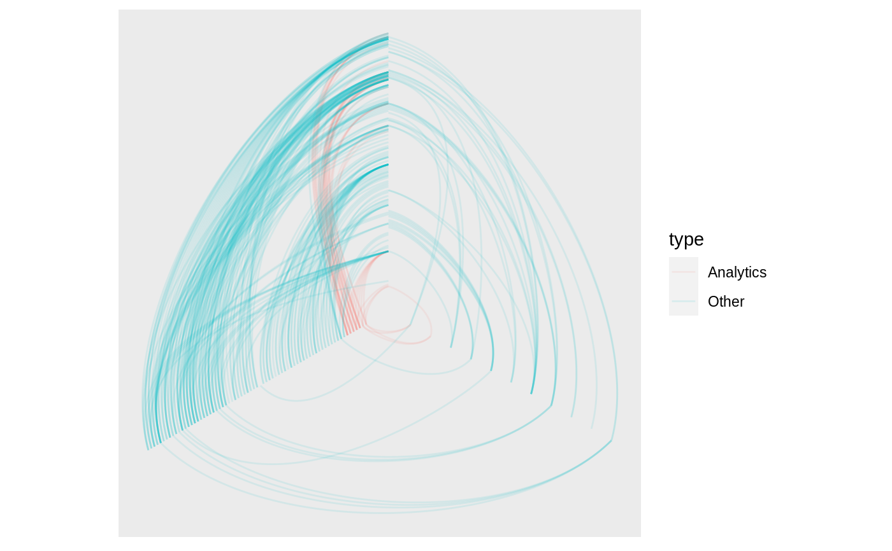

This geom is only intended for use together with the hive layout. It draws edges between nodes as bezier curves, with the control points positioned at the same radii as the start or end point, and at a distance defined by the curvature argument.
geom_edge_hive(mapping = NULL, data = get_edges(), position = "identity", arrow = NULL, strength = 1, n = 100, lineend = "butt", linejoin = "round", linemitre = 1, label_colour = "black", label_alpha = 1, label_parse = FALSE, check_overlap = FALSE, angle_calc = "rot", force_flip = TRUE, label_dodge = NULL, label_push = NULL, show.legend = NA, ..., curvature) geom_edge_hive2(mapping = NULL, data = get_edges("long"), position = "identity", arrow = NULL, strength = 1, n = 100, lineend = "butt", linejoin = "round", linemitre = 1, label_colour = "black", label_alpha = 1, label_parse = FALSE, check_overlap = FALSE, angle_calc = "rot", force_flip = TRUE, label_dodge = NULL, label_push = NULL, show.legend = NA, ..., curvature) geom_edge_hive0(mapping = NULL, data = get_edges(), position = "identity", arrow = NULL, strength = 1, lineend = "butt", show.legend = NA, ..., curvature)
| mapping | Set of aesthetic mappings created by |
|---|---|
| data | The return of a call to |
| position | Position adjustment, either as a string, or the result of a call to a position adjustment function. |
| arrow | Arrow specification, as created by |
| strength | The curvature of the bezier. Defines the distance from the control points to the midpoint between the start and end node. 1 means the control points are positioned halfway between the nodes and the middle of the two axes, while 0 means it coincide with the nodes (resulting in straight lines) |
| n | The number of points to create along the path. |
| lineend | Line end style (round, butt, square). |
| linejoin | Line join style (round, mitre, bevel). |
| linemitre | Line mitre limit (number greater than 1). |
| label_colour | The colour of the edge label. If |
| label_alpha | The opacity of the edge label. If |
| label_parse | If |
| check_overlap | If |
| angle_calc | Either 'none', 'along', or 'across'. If 'none' the label will use the angle aesthetic of the geom. If 'along' The label will be written along the edge direction. If 'across' the label will be written across the edge direction. |
| force_flip | Logical. If |
| label_dodge | A |
| label_push | A |
| show.legend | logical. Should this layer be included in the legends?
|
| ... | Other arguments passed on to |
| curvature | Deprecated. Use |
geom_edge_hive and geom_edge_hive0 understand the following
aesthetics. Bold aesthetics are automatically set, but can be overridden.
x
y
xend
yend
edge_colour
edge_width
edge_linetype
edge_alpha
filter
geom_edge_hive2 understand the following aesthetics. Bold aesthetics are
automatically set, but can be overridden.
x
y
group
edge_colour
edge_width
edge_linetype
edge_alpha
filter
geom_edge_hive and geom_edge_hive2 furthermore takes the following
aesthetics.
start_cap
end_cap
label
label_pos
label_size
angle
hjust
vjust
family
fontface
lineheight
The position along the path (not computed for the *0 version)
Many geom_edge_* layers comes in 3 flavors depending on the level of control
needed over the drawing. The default (no numeric postfix) generate a number
of points (n) along the edge and draws it as a path. Each point along
the line has a numeric value associated with it giving the position along the
path, and it is therefore possible to show the direction of the edge by
mapping to this e.g. colour = ..index... The version postfixed with a
"2" uses the "long" edge format (see get_edges()) and makes it
possible to interpolate node parameter between the start and end node along
the edge. It is considerable less performant so should only be used if this
is needed. The version postfixed with a "0" draws the edge in the most
performant way, often directly using an appropriate grob from the grid
package, but does not allow for gradients along the edge.
Often it is beneficial to stop the drawing of the edge before it reaches the
node, for instance in cases where an arrow should be drawn and the arrowhead
shouldn't lay on top or below the node point. geom_edge_* and geom_edge_*2
supports this through the start_cap and end_cap aesthetics that takes a
geometry() specification and dynamically caps the termini of the
edges based on the given specifications. This means that if
end_cap = circle(1, 'cm') the edges will end at a distance of 1cm even
during resizing of the plot window.
All geom_edge_* and geom_edge_*2 have the ability to draw a
label along the edge. The reason this is not a separate geom is that in order
for the label to know the location of the edge it needs to know the edge type
etc. Labels are drawn by providing a label aesthetic. The label_pos can be
used to specify where along the edge it should be drawn by supplying a number
between 0 and 1. The label_size aesthetic can be used to control the size of
the label. Often it is needed to have the label written along the direction
of the edge, but since the actual angle is dependent on the plot dimensions
this cannot be calculated beforehand. Using the angle_calc argument allows
you to specify whether to use the supplied angle aesthetic or whether to draw
the label along or across the edge.
In order to avoid excessive typing edge aesthetic names are
automatically expanded. Because of this it is not necessary to write
edge_colour within the aes() call as colour will
automatically be renamed appropriately.
Other geom_edge_*: geom_edge_arc,
geom_edge_bend,
geom_edge_density,
geom_edge_diagonal,
geom_edge_elbow,
geom_edge_fan,
geom_edge_link,
geom_edge_loop,
geom_edge_point,
geom_edge_span,
geom_edge_tile
# Plot the flare import graph as a hive plot library(tidygraph) flareGr <- as_tbl_graph(flare$imports) %>% mutate( type = dplyr::case_when( centrality_degree(mode = 'in') == 0 ~ 'Source', centrality_degree(mode = 'out') == 0 ~ 'Sink', TRUE ~ 'Both' ) ) %>% activate(edges) %>% mutate( type = dplyr::case_when( grepl('flare.analytics', paste(.N()$name[from], .N()$name[to])) ~ 'Analytics', TRUE ~ 'Other' ) ) ggraph(flareGr, 'hive', axis = type) + geom_edge_hive(aes(colour = type), edge_alpha = 0.1) + coord_fixed()